1.3 Autoencoders en TensorFlow / Keras#
Este notebook cubre el concepto de autoencoder desde sus fundamentos matematicos hasta implementaciones practicas con Keras. Se trabajan cuatro variantes: el autoencoder basico, el autoencoder convolucional, el denoising autoencoder y el variational autoencoder (VAE). El dataset utilizado es MNIST.
Contenidos#
Fundamentos matematicos
Preparacion del entorno y datos
Autoencoder basico (denso)
Autoencoder convolucional
Denoising Autoencoder
Variational Autoencoder (VAE)
Deteccion de anomalias con autoencoders
Comparativa de variantes
1. Fundamentos matematicos#
Un autoencoder es una red neuronal que aprende dos funciones:
Encoder \(f_\theta\): comprime la entrada \(x\) en una representacion latente \(z\) de menor dimension. $\(z = f_\theta(x)\)$
Decoder \(g_\phi\): reconstruye la entrada desde la representacion latente. $\(\hat{x} = g_\phi(z)\)$
El entrenamiento minimiza el error de reconstruccion entre \(x\) y \(\hat{x}\):
No se usan etiquetas externas: la propia entrada es el objetivo. Esto lo convierte en un metodo de aprendizaje no supervisado.
Intuicion geometrica#
Si los datos viven en un espacio de dimension \(D\) (imagenes de 784 pixeles), el autoencoder los proyecta en un espacio de dimension \(d \ll D\) que captura la estructura esencial, y luego invierte esa proyeccion. La clave esta en el cuello de botella: al forzar la informacion a pasar por una representacion comprimida, la red no puede memorizar la entrada y debe aprender caracteristicas relevantes.
2. Preparacion del entorno y datos#
import tensorflow as tf
from tensorflow import keras
from tensorflow.keras import layers
import numpy as np
import matplotlib.pyplot as plt
from sklearn.decomposition import PCA
# Reproducibilidad
tf.random.set_seed(42)
np.random.seed(42)
print(f'TensorFlow : {tf.__version__}')
print(f'Keras : {keras.__version__}')
print(f'GPU : {tf.config.list_physical_devices("GPU")}')
TensorFlow : 2.20.0
Keras : 3.13.2
GPU : [PhysicalDevice(name='/physical_device:GPU:0', device_type='GPU')]
# Cargar MNIST y normalizar a [0, 1]
(x_train, y_train), (x_test, y_test) = keras.datasets.mnist.load_data()
# Normalizar y agregar canal: (N, 28, 28) -> (N, 28, 28, 1)
x_train = x_train.astype('float32') / 255.0
x_test = x_test.astype('float32') / 255.0
x_train = np.expand_dims(x_train, -1)
x_test = np.expand_dims(x_test, -1)
print(f'Entrenamiento : {x_train.shape}')
print(f'Prueba : {x_test.shape}')
# Visualizar ejemplos
fig, axes = plt.subplots(2, 8, figsize=(14, 4))
for i in range(16):
ax = axes[i // 8, i % 8]
ax.imshow(x_train[i].squeeze(), cmap='gray')
ax.set_title(str(y_train[i]), fontsize=10)
ax.axis('off')
plt.suptitle('Ejemplos del dataset MNIST', fontsize=13, y=1.02)
plt.tight_layout()
plt.show()
Downloading data from https://storage.googleapis.com/tensorflow/tf-keras-datasets/mnist.npz
11490434/11490434 ━━━━━━━━━━━━━━━━━━━━ 2s 0us/step
Entrenamiento : (60000, 28, 28, 1)
Prueba : (10000, 28, 28, 1)
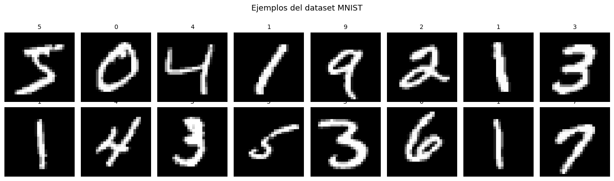
3. Autoencoder basico (capas densas)#
La variante mas simple. Encoder y decoder estan compuestos por capas densas. La imagen 28x28 se aplana a un vector de 784 antes de entrar al encoder.
Arquitectura:
Encoder: 784 -> 256 -> 128 -> 64 -> z (32)
Decoder: 32 -> 64 -> 128 -> 256 -> 784
El espacio latente tiene dimension 32: la imagen se comprime en un factor de ~24.5x.
LATENT_DIM = 32
def build_basic_autoencoder(latent_dim=32):
"""
Construye un autoencoder denso usando la API Funcional de Keras.
Retorna tres modelos: encoder, decoder y autoencoder completo.
Compartir los modelos permite evaluar el espacio latente por separado.
"""
# Encoder: comprime la imagen aplanada a un vector latente
encoder_input = keras.Input(shape=(28, 28, 1), name='encoder_input')
x = layers.Flatten()(encoder_input)
x = layers.Dense(256, activation='relu')(x)
x = layers.Dense(128, activation='relu')(x)
x = layers.Dense(64, activation='relu')(x)
z = layers.Dense(latent_dim, name='latent')(x)
encoder = keras.Model(encoder_input, z, name='encoder')
# Decoder: reconstruye la imagen desde el latente
decoder_input = keras.Input(shape=(latent_dim,), name='decoder_input')
x = layers.Dense(64, activation='relu')(decoder_input)
x = layers.Dense(128, activation='relu')(x)
x = layers.Dense(256, activation='relu')(x)
# Sigmoid: salida en [0,1] coincide con la entrada normalizada
x = layers.Dense(784, activation='sigmoid')(x)
out = layers.Reshape((28, 28, 1))(x)
decoder = keras.Model(decoder_input, out, name='decoder')
# Autoencoder = encoder + decoder
ae_input = keras.Input(shape=(28, 28, 1))
ae_output = decoder(encoder(ae_input))
autoencoder = keras.Model(ae_input, ae_output, name='autoencoder')
return encoder, decoder, autoencoder
ae_encoder, ae_decoder, ae = build_basic_autoencoder(LATENT_DIM)
ae.compile(optimizer='adam', loss='mse')
print(f'Parametros entrenables: {ae.count_params():,}')
ae.summary()
Parametros entrenables: 489,136
Model: "autoencoder"
┏━━━━━━━━━━━━━━━━━━━━━━━━━━━━━━━━━┳━━━━━━━━━━━━━━━━━━━━━━━━┳━━━━━━━━━━━━━━━┓ ┃ Layer (type) ┃ Output Shape ┃ Param # ┃ ┡━━━━━━━━━━━━━━━━━━━━━━━━━━━━━━━━━╇━━━━━━━━━━━━━━━━━━━━━━━━╇━━━━━━━━━━━━━━━┩ │ input_layer (InputLayer) │ (None, 28, 28, 1) │ 0 │ ├─────────────────────────────────┼────────────────────────┼───────────────┤ │ encoder (Functional) │ (None, 32) │ 244,192 │ ├─────────────────────────────────┼────────────────────────┼───────────────┤ │ decoder (Functional) │ (None, 28, 28, 1) │ 244,944 │ └─────────────────────────────────┴────────────────────────┴───────────────┘
Total params: 489,136 (1.87 MB)
Trainable params: 489,136 (1.87 MB)
Non-trainable params: 0 (0.00 B)
# El autoencoder se entrena con keras estandar: x como entrada y x como objetivo
print('Entrenando el autoencoder basico...')
history_ae = ae.fit(
x_train, x_train, # x es entrada Y objetivo
validation_data=(x_test, x_test),
epochs=20,
batch_size=128,
verbose=2,
)
Entrenando el autoencoder basico...
Epoch 1/20
469/469 - 9s - 20ms/step - loss: 0.0456 - val_loss: 0.0247
Epoch 2/20
469/469 - 1s - 3ms/step - loss: 0.0211 - val_loss: 0.0178
Epoch 3/20
469/469 - 2s - 3ms/step - loss: 0.0167 - val_loss: 0.0152
Epoch 4/20
469/469 - 2s - 3ms/step - loss: 0.0142 - val_loss: 0.0132
Epoch 5/20
469/469 - 2s - 3ms/step - loss: 0.0128 - val_loss: 0.0122
Epoch 6/20
469/469 - 2s - 4ms/step - loss: 0.0118 - val_loss: 0.0113
Epoch 7/20
469/469 - 2s - 4ms/step - loss: 0.0109 - val_loss: 0.0105
Epoch 8/20
469/469 - 2s - 3ms/step - loss: 0.0102 - val_loss: 0.0098
Epoch 9/20
469/469 - 2s - 4ms/step - loss: 0.0097 - val_loss: 0.0094
Epoch 10/20
469/469 - 2s - 4ms/step - loss: 0.0093 - val_loss: 0.0090
Epoch 11/20
469/469 - 2s - 3ms/step - loss: 0.0090 - val_loss: 0.0088
Epoch 12/20
469/469 - 2s - 3ms/step - loss: 0.0087 - val_loss: 0.0085
Epoch 13/20
469/469 - 2s - 4ms/step - loss: 0.0084 - val_loss: 0.0082
Epoch 14/20
469/469 - 2s - 4ms/step - loss: 0.0082 - val_loss: 0.0079
Epoch 15/20
469/469 - 3s - 6ms/step - loss: 0.0079 - val_loss: 0.0078
Epoch 16/20
469/469 - 2s - 4ms/step - loss: 0.0077 - val_loss: 0.0077
Epoch 17/20
469/469 - 2s - 3ms/step - loss: 0.0075 - val_loss: 0.0076
Epoch 18/20
469/469 - 2s - 3ms/step - loss: 0.0074 - val_loss: 0.0074
Epoch 19/20
469/469 - 3s - 6ms/step - loss: 0.0073 - val_loss: 0.0072
Epoch 20/20
469/469 - 2s - 4ms/step - loss: 0.0072 - val_loss: 0.0072
# Curva de perdida
plt.figure(figsize=(8, 4))
plt.plot(history_ae.history['loss'], label='Train', color='steelblue', linewidth=2)
plt.plot(history_ae.history['val_loss'], label='Validation', color='darkorange', linewidth=2)
plt.xlabel('Epoca'); plt.ylabel('MSE')
plt.title('Curva de entrenamiento - Autoencoder basico')
plt.legend(); plt.grid(True, alpha=0.3)
plt.tight_layout()
plt.show()
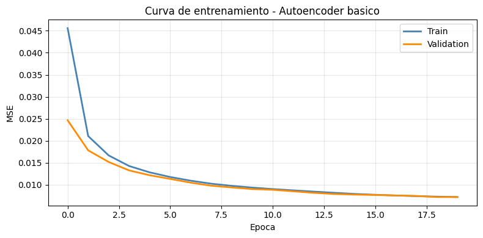
def visualize_reconstructions(autoencoder, x, n=8, title='Reconstrucciones'):
"""Muestra imagenes originales y sus reconstrucciones."""
recon = autoencoder.predict(x[:n], verbose=0)
fig, axes = plt.subplots(2, n, figsize=(2*n, 4))
for i in range(n):
axes[0, i].imshow(x[i].squeeze(), cmap='gray'); axes[0, i].axis('off')
axes[1, i].imshow(recon[i].squeeze(), cmap='gray'); axes[1, i].axis('off')
axes[0, 0].set_ylabel('Original', fontsize=10, rotation=0, labelpad=40, va='center')
axes[1, 0].set_ylabel('Reconstruida', fontsize=10, rotation=0, labelpad=40, va='center')
plt.suptitle(title, fontsize=13)
plt.tight_layout()
plt.show()
visualize_reconstructions(ae, x_test, title='Autoencoder basico - Test set')
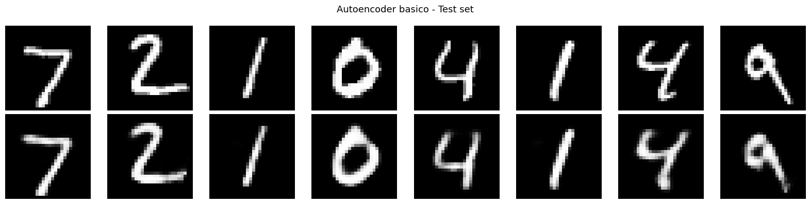
def visualize_latent_space(encoder, x, y, n_samples=3000, title='Espacio latente'):
"""
Proyecta el espacio latente en 2D usando PCA y colorea por digito.
Permite ver si el modelo agrupa los digitos en el espacio latente,
aunque no fue entrenado con etiquetas.
"""
z = encoder.predict(x[:n_samples], verbose=0)
pca = PCA(n_components=2)
z_2d = pca.fit_transform(z)
plt.figure(figsize=(8, 6))
sc = plt.scatter(z_2d[:, 0], z_2d[:, 1], c=y[:n_samples],
cmap='tab10', s=5, alpha=0.7)
plt.colorbar(sc, label='Digito')
plt.xlabel(f'PC1 ({pca.explained_variance_ratio_[0]*100:.1f}% var)')
plt.ylabel(f'PC2 ({pca.explained_variance_ratio_[1]*100:.1f}% var)')
plt.title(title)
plt.tight_layout()
plt.show()
visualize_latent_space(ae_encoder, x_test, y_test,
title='Espacio latente - Autoencoder basico (PCA 2D)')
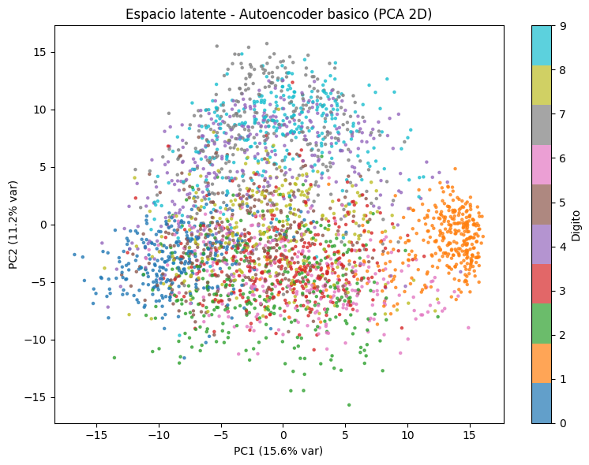
Observacion#
A pesar de que el modelo no fue entrenado con etiquetas, el espacio latente muestra una organizacion que refleja la estructura real de los datos: digitos similares tienden a agruparse en regiones proximas. Esto demuestra que el autoencoder aprende caracteristicas semanticamente significativas de forma no supervisada.
4. Autoencoder Convolucional#
Las capas densas tratan cada pixel de forma independiente. Las capas convolucionales comparten pesos y explotan la correlacion local entre pixeles vecinos, lo que las hace mas adecuadas para imagenes.
Arquitectura:
Encoder:
(28, 28, 1) -> Conv2D(32) + MaxPool -> (14, 14, 32)
-> Conv2D(64) + MaxPool -> (7, 7, 64)
-> Flatten + Dense -> latent (32)
Decoder:
latent -> Dense + Reshape -> (7, 7, 64)
-> Conv2DTranspose -> (14, 14, 64)
-> Conv2DTranspose -> (28, 28, 32)
-> Conv2D(1, sigmoid) -> (28, 28, 1)
def build_conv_autoencoder(latent_dim=32):
"""Autoencoder convolucional con Conv2D y Conv2DTranspose."""
# Encoder
enc_in = keras.Input(shape=(28, 28, 1))
x = layers.Conv2D(32, 3, activation='relu', padding='same')(enc_in)
x = layers.MaxPooling2D(2)(x) # (14, 14, 32)
x = layers.Conv2D(64, 3, activation='relu', padding='same')(x)
x = layers.MaxPooling2D(2)(x) # (7, 7, 64)
x = layers.Flatten()(x) # (3136,)
z = layers.Dense(latent_dim, name='latent')(x)
encoder = keras.Model(enc_in, z, name='conv_encoder')
# Decoder
dec_in = keras.Input(shape=(latent_dim,))
x = layers.Dense(64 * 7 * 7, activation='relu')(dec_in)
x = layers.Reshape((7, 7, 64))(x)
# Conv2DTranspose con stride=2 duplica la resolucion espacial
x = layers.Conv2DTranspose(64, 3, strides=2, activation='relu', padding='same')(x)
x = layers.Conv2DTranspose(32, 3, strides=2, activation='relu', padding='same')(x)
out = layers.Conv2D(1, 3, activation='sigmoid', padding='same')(x)
decoder = keras.Model(dec_in, out, name='conv_decoder')
# Autoencoder
ae_in = keras.Input(shape=(28, 28, 1))
ae_out = decoder(encoder(ae_in))
autoencoder = keras.Model(ae_in, ae_out, name='conv_autoencoder')
return encoder, decoder, autoencoder
conv_encoder, conv_decoder, conv_ae = build_conv_autoencoder(LATENT_DIM)
conv_ae.compile(optimizer='adam', loss='mse')
print(f'Parametros (Conv AE): {conv_ae.count_params():,}')
Parametros (Conv AE): 278,369
print('Entrenando autoencoder convolucional...')
history_conv = conv_ae.fit(
x_train, x_train,
validation_data=(x_test, x_test),
epochs=20, batch_size=128, verbose=2,
)
# Comparativa de curvas
plt.figure(figsize=(8, 4))
plt.plot(history_ae.history['loss'], label='Basico (denso)', color='steelblue', linewidth=2)
plt.plot(history_conv.history['loss'], label='Convolucional', color='darkorange', linewidth=2)
plt.xlabel('Epoca'); plt.ylabel('MSE')
plt.title('Comparativa de perdida de entrenamiento')
plt.legend(); plt.grid(True, alpha=0.3)
plt.tight_layout()
plt.show()
Entrenando autoencoder convolucional...
Epoch 1/20
469/469 - 13s - 28ms/step - loss: 0.0383 - val_loss: 0.0099
Epoch 2/20
469/469 - 4s - 8ms/step - loss: 0.0079 - val_loss: 0.0063
Epoch 3/20
469/469 - 4s - 9ms/step - loss: 0.0058 - val_loss: 0.0053
Epoch 4/20
469/469 - 4s - 8ms/step - loss: 0.0050 - val_loss: 0.0047
Epoch 5/20
469/469 - 4s - 8ms/step - loss: 0.0046 - val_loss: 0.0044
Epoch 6/20
469/469 - 4s - 9ms/step - loss: 0.0043 - val_loss: 0.0042
Epoch 7/20
469/469 - 4s - 8ms/step - loss: 0.0040 - val_loss: 0.0040
Epoch 8/20
469/469 - 4s - 8ms/step - loss: 0.0039 - val_loss: 0.0039
Epoch 9/20
469/469 - 5s - 10ms/step - loss: 0.0037 - val_loss: 0.0038
Epoch 10/20
469/469 - 4s - 9ms/step - loss: 0.0036 - val_loss: 0.0037
Epoch 11/20
469/469 - 4s - 8ms/step - loss: 0.0035 - val_loss: 0.0036
Epoch 12/20
469/469 - 4s - 9ms/step - loss: 0.0035 - val_loss: 0.0035
Epoch 13/20
469/469 - 4s - 8ms/step - loss: 0.0034 - val_loss: 0.0035
Epoch 14/20
469/469 - 4s - 8ms/step - loss: 0.0033 - val_loss: 0.0035
Epoch 15/20
469/469 - 5s - 11ms/step - loss: 0.0033 - val_loss: 0.0034
Epoch 16/20
469/469 - 9s - 20ms/step - loss: 0.0032 - val_loss: 0.0034
Epoch 17/20
469/469 - 4s - 9ms/step - loss: 0.0032 - val_loss: 0.0034
Epoch 18/20
469/469 - 4s - 9ms/step - loss: 0.0032 - val_loss: 0.0034
Epoch 19/20
469/469 - 4s - 9ms/step - loss: 0.0031 - val_loss: 0.0033
Epoch 20/20
469/469 - 4s - 9ms/step - loss: 0.0031 - val_loss: 0.0033
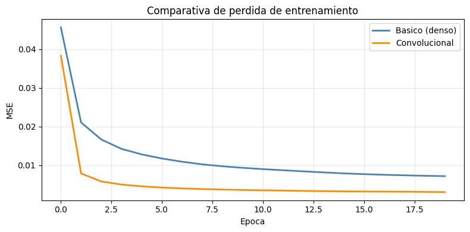
visualize_reconstructions(conv_ae, x_test, title='Autoencoder convolucional - Test set')
visualize_latent_space(conv_encoder, x_test, y_test,
title='Espacio latente - Autoencoder convolucional (PCA 2D)')
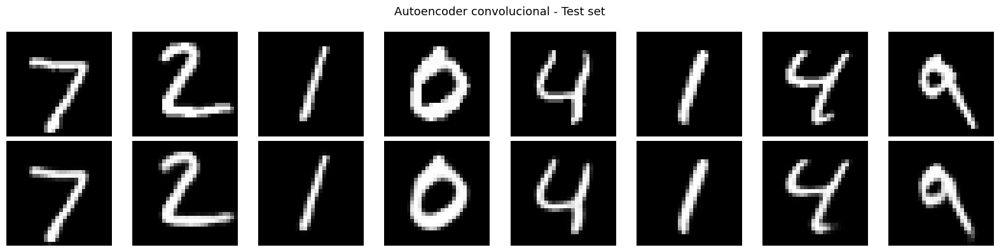
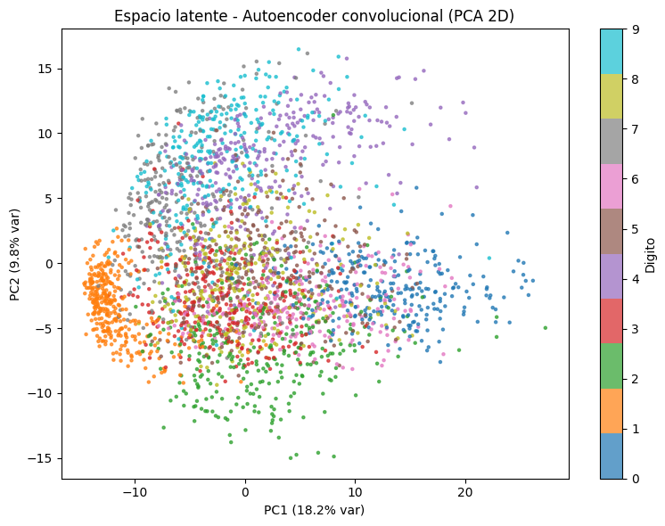
5. Denoising Autoencoder (DAE)#
El denoising autoencoder entrena el modelo para que aprenda a eliminar el ruido. En lugar de pasarle la imagen limpia, se le pasa una version corrompida y la red debe reconstruir la original sin ruido:
Esto fuerza a aprender representaciones robustas: no puede memorizar detalles superficiales del ruido, debe capturar la estructura global del digito.
def add_gaussian_noise(images, std=0.3):
"""Agrega ruido gaussiano y recorta a [0, 1]."""
noise = np.random.normal(0, std, images.shape).astype('float32')
return np.clip(images + noise, 0.0, 1.0)
# Crear versiones con ruido para entrenamiento
NOISE_STD = 0.3
x_train_noisy = add_gaussian_noise(x_train, NOISE_STD)
x_test_noisy = add_gaussian_noise(x_test, NOISE_STD)
# Visualizar el efecto del ruido
fig, axes = plt.subplots(2, 8, figsize=(16, 4))
for i in range(8):
axes[0, i].imshow(x_test[i].squeeze(), cmap='gray'); axes[0, i].axis('off')
axes[1, i].imshow(x_test_noisy[i].squeeze(), cmap='gray'); axes[1, i].axis('off')
axes[0, 0].set_ylabel('Original', fontsize=10, rotation=0, labelpad=40, va='center')
axes[1, 0].set_ylabel('Con ruido', fontsize=10, rotation=0, labelpad=40, va='center')
plt.suptitle(f'Efecto del ruido gaussiano (std={NOISE_STD})', fontsize=13)
plt.tight_layout()
plt.show()
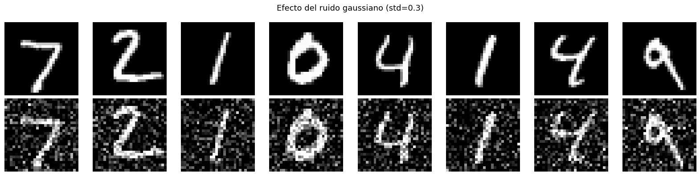
# Entrenar el DAE: misma arquitectura conv, pero entrenamiento distinto
# Entrada: imagen ruidosa | Objetivo: imagen limpia
_, _, dae = build_conv_autoencoder(LATENT_DIM)
dae.compile(optimizer='adam', loss='mse')
print('Entrenando Denoising Autoencoder...')
history_dae = dae.fit(
x_train_noisy, x_train, # noisy in, clean out
validation_data=(x_test_noisy, x_test),
epochs=20, batch_size=128, verbose=2,
)
Entrenando Denoising Autoencoder...
Epoch 1/20
469/469 - 11s - 23ms/step - loss: 0.0500 - val_loss: 0.0164
Epoch 2/20
469/469 - 4s - 9ms/step - loss: 0.0126 - val_loss: 0.0100
Epoch 3/20
469/469 - 4s - 9ms/step - loss: 0.0092 - val_loss: 0.0085
Epoch 4/20
469/469 - 4s - 9ms/step - loss: 0.0081 - val_loss: 0.0078
Epoch 5/20
469/469 - 4s - 9ms/step - loss: 0.0075 - val_loss: 0.0074
Epoch 6/20
469/469 - 4s - 9ms/step - loss: 0.0072 - val_loss: 0.0071
Epoch 7/20
469/469 - 4s - 9ms/step - loss: 0.0069 - val_loss: 0.0070
Epoch 8/20
469/469 - 4s - 9ms/step - loss: 0.0067 - val_loss: 0.0068
Epoch 9/20
469/469 - 4s - 9ms/step - loss: 0.0065 - val_loss: 0.0067
Epoch 10/20
469/469 - 4s - 9ms/step - loss: 0.0064 - val_loss: 0.0066
Epoch 11/20
469/469 - 4s - 9ms/step - loss: 0.0062 - val_loss: 0.0065
Epoch 12/20
469/469 - 4s - 9ms/step - loss: 0.0061 - val_loss: 0.0065
Epoch 13/20
469/469 - 4s - 9ms/step - loss: 0.0060 - val_loss: 0.0064
Epoch 14/20
469/469 - 4s - 9ms/step - loss: 0.0059 - val_loss: 0.0063
Epoch 15/20
469/469 - 5s - 10ms/step - loss: 0.0059 - val_loss: 0.0063
Epoch 16/20
469/469 - 4s - 9ms/step - loss: 0.0058 - val_loss: 0.0064
Epoch 17/20
469/469 - 4s - 9ms/step - loss: 0.0058 - val_loss: 0.0063
Epoch 18/20
469/469 - 4s - 9ms/step - loss: 0.0057 - val_loss: 0.0062
Epoch 19/20
469/469 - 4s - 9ms/step - loss: 0.0056 - val_loss: 0.0062
Epoch 20/20
469/469 - 4s - 9ms/step - loss: 0.0056 - val_loss: 0.0062
# Visualizar denoising en tres filas: original / ruidosa / reconstruida
n = 8
recon = dae.predict(x_test_noisy[:n], verbose=0)
fig, axes = plt.subplots(3, n, figsize=(2*n, 6))
etiquetas = ['Original', f'Ruidosa (std={NOISE_STD})', 'Reconstruida']
datos = [x_test[:n], x_test_noisy[:n], recon]
for row, (data, label) in enumerate(zip(datos, etiquetas)):
for col in range(n):
axes[row, col].imshow(data[col].squeeze(), cmap='gray')
axes[row, col].axis('off')
axes[row, 0].set_ylabel(label, fontsize=10, rotation=0, labelpad=55, va='center')
plt.suptitle('Denoising Autoencoder', fontsize=13)
plt.tight_layout()
plt.show()
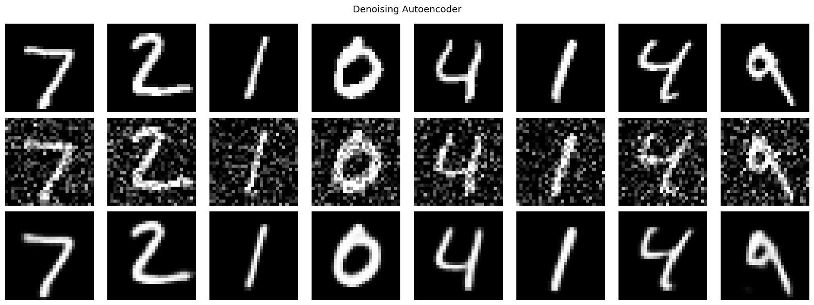
6. Variational Autoencoder (VAE)#
El VAE (Kingma & Welling, 2013) convierte el bottleneck en una distribucion de probabilidad sobre el espacio latente:
Funcion de perdida (ELBO)#
Reconstruccion: BCE pixel a pixel.
KL: fuerza al posterior a parecerse a la prior \(\mathcal{N}(0, I)\), regularizando el espacio latente.
Truco de reparametrizacion#
El muestreo \(z \sim \mathcal{N}(\mu, \sigma^2)\) no es diferenciable. Se descompone:
El gradiente fluye a traves de \(\mu\) y \(\sigma\) mientras \(\epsilon\) es ruido externo.
VAE_LATENT_DIM = 16
class Sampling(layers.Layer):
"""
Capa que implementa el truco de reparametrizacion.
z = mu + exp(0.5 * log_var) * epsilon, con epsilon ~ N(0, I).
"""
def call(self, inputs):
mu, log_var = inputs
batch = tf.shape(mu)[0]
dim = tf.shape(mu)[1]
epsilon = tf.random.normal(shape=(batch, dim))
return mu + tf.exp(0.5 * log_var) * epsilon
def build_vae_encoder(latent_dim=16):
"""Encoder del VAE: produce mu y log_var en lugar de un z fijo."""
inputs = keras.Input(shape=(28, 28, 1))
x = layers.Flatten()(inputs)
x = layers.Dense(400, activation='relu')(x)
x = layers.Dense(200, activation='relu')(x)
mu = layers.Dense(latent_dim, name='mu')(x)
log_var = layers.Dense(latent_dim, name='log_var')(x)
z = Sampling(name='z')([mu, log_var])
return keras.Model(inputs, [mu, log_var, z], name='vae_encoder')
def build_vae_decoder(latent_dim=16):
inputs = keras.Input(shape=(latent_dim,))
x = layers.Dense(200, activation='relu')(inputs)
x = layers.Dense(400, activation='relu')(x)
x = layers.Dense(784, activation='sigmoid')(x)
out = layers.Reshape((28, 28, 1))(x)
return keras.Model(inputs, out, name='vae_decoder')
class VAE(keras.Model):
"""
VAE como subclase de keras.Model.
Implementa train_step personalizado para combinar perdida de reconstruccion + KL.
"""
def __init__(self, encoder, decoder, beta=1.0, **kwargs):
super().__init__(**kwargs)
self.encoder = encoder
self.decoder = decoder
self.beta = beta
# Trackers para mostrar las dos componentes de la perdida en el log
self.total_loss_tracker = keras.metrics.Mean(name='loss')
self.recon_loss_tracker = keras.metrics.Mean(name='recon_loss')
self.kl_loss_tracker = keras.metrics.Mean(name='kl_loss')
@property
def metrics(self):
return [self.total_loss_tracker, self.recon_loss_tracker, self.kl_loss_tracker]
def call(self, inputs):
_, _, z = self.encoder(inputs)
return self.decoder(z)
def train_step(self, data):
if isinstance(data, tuple):
data = data[0]
with tf.GradientTape() as tape:
mu, log_var, z = self.encoder(data)
recon = self.decoder(z)
# Perdida de reconstruccion: BCE sobre todos los pixeles del batch
recon_loss = tf.reduce_mean(
tf.reduce_sum(
keras.losses.binary_crossentropy(data, recon),
axis=(1, 2)
)
)
# KL divergence en forma cerrada para gaussianas
kl_loss = -0.5 * tf.reduce_mean(
tf.reduce_sum(1 + log_var - tf.square(mu) - tf.exp(log_var), axis=1)
)
total_loss = recon_loss + self.beta * kl_loss
grads = tape.gradient(total_loss, self.trainable_weights)
self.optimizer.apply_gradients(zip(grads, self.trainable_weights))
self.total_loss_tracker.update_state(total_loss)
self.recon_loss_tracker.update_state(recon_loss)
self.kl_loss_tracker.update_state(kl_loss)
return {m.name: m.result() for m in self.metrics}
# Construir y compilar VAE
vae_encoder = build_vae_encoder(VAE_LATENT_DIM)
vae_decoder = build_vae_decoder(VAE_LATENT_DIM)
vae = VAE(vae_encoder, vae_decoder, beta=1.0)
vae.compile(optimizer=keras.optimizers.Adam(1e-3))
print(f'Parametros encoder: {vae_encoder.count_params():,}')
print(f'Parametros decoder: {vae_decoder.count_params():,}')
Parametros encoder: 400,632
Parametros decoder: 398,184
print('Entrenando VAE...')
history_vae = vae.fit(x_train, epochs=30, batch_size=128, verbose=2)
Entrenando VAE...
Epoch 1/30
469/469 - 7s - 15ms/step - kl_loss: 11.3020 - loss: 167.3349 - recon_loss: 156.0329
Epoch 2/30
469/469 - 2s - 3ms/step - kl_loss: 18.5147 - loss: 122.8754 - recon_loss: 104.3608
Epoch 3/30
469/469 - 2s - 4ms/step - kl_loss: 20.2008 - loss: 114.7540 - recon_loss: 94.5532
Epoch 4/30
469/469 - 2s - 3ms/step - kl_loss: 20.8590 - loss: 111.1494 - recon_loss: 90.2904
Epoch 5/30
469/469 - 2s - 3ms/step - kl_loss: 21.2330 - loss: 109.0725 - recon_loss: 87.8395
Epoch 6/30
469/469 - 2s - 3ms/step - kl_loss: 21.4399 - loss: 107.6502 - recon_loss: 86.2103
Epoch 7/30
469/469 - 2s - 3ms/step - kl_loss: 21.5980 - loss: 106.5726 - recon_loss: 84.9745
Epoch 8/30
469/469 - 2s - 3ms/step - kl_loss: 21.7087 - loss: 105.6478 - recon_loss: 83.9391
Epoch 9/30
469/469 - 2s - 3ms/step - kl_loss: 21.8464 - loss: 104.9577 - recon_loss: 83.1114
Epoch 10/30
469/469 - 2s - 4ms/step - kl_loss: 21.9010 - loss: 104.3115 - recon_loss: 82.4105
Epoch 11/30
469/469 - 2s - 4ms/step - kl_loss: 21.9774 - loss: 103.7655 - recon_loss: 81.7881
Epoch 12/30
469/469 - 2s - 3ms/step - kl_loss: 22.0179 - loss: 103.2989 - recon_loss: 81.2810
Epoch 13/30
469/469 - 2s - 3ms/step - kl_loss: 22.0935 - loss: 102.9016 - recon_loss: 80.8080
Epoch 14/30
469/469 - 2s - 3ms/step - kl_loss: 22.1233 - loss: 102.5335 - recon_loss: 80.4103
Epoch 15/30
469/469 - 1s - 3ms/step - kl_loss: 22.1405 - loss: 102.2005 - recon_loss: 80.0600
Epoch 16/30
469/469 - 2s - 3ms/step - kl_loss: 22.1918 - loss: 101.8992 - recon_loss: 79.7075
Epoch 17/30
469/469 - 2s - 3ms/step - kl_loss: 22.2259 - loss: 101.6349 - recon_loss: 79.4090
Epoch 18/30
469/469 - 3s - 6ms/step - kl_loss: 22.2270 - loss: 101.4596 - recon_loss: 79.2325
Epoch 19/30
469/469 - 2s - 3ms/step - kl_loss: 22.2420 - loss: 101.1775 - recon_loss: 78.9354
Epoch 20/30
469/469 - 2s - 3ms/step - kl_loss: 22.2773 - loss: 100.9439 - recon_loss: 78.6666
Epoch 21/30
469/469 - 2s - 3ms/step - kl_loss: 22.2836 - loss: 100.7047 - recon_loss: 78.4211
Epoch 22/30
469/469 - 2s - 3ms/step - kl_loss: 22.3045 - loss: 100.5677 - recon_loss: 78.2633
Epoch 23/30
469/469 - 2s - 3ms/step - kl_loss: 22.3234 - loss: 100.3816 - recon_loss: 78.0582
Epoch 24/30
469/469 - 2s - 3ms/step - kl_loss: 22.3105 - loss: 100.2548 - recon_loss: 77.9443
Epoch 25/30
469/469 - 2s - 4ms/step - kl_loss: 22.3161 - loss: 100.0576 - recon_loss: 77.7416
Epoch 26/30
469/469 - 2s - 4ms/step - kl_loss: 22.3654 - loss: 100.0018 - recon_loss: 77.6365
Epoch 27/30
469/469 - 2s - 3ms/step - kl_loss: 22.3721 - loss: 99.8183 - recon_loss: 77.4461
Epoch 28/30
469/469 - 1s - 3ms/step - kl_loss: 22.3872 - loss: 99.6846 - recon_loss: 77.2973
Epoch 29/30
469/469 - 2s - 3ms/step - kl_loss: 22.3950 - loss: 99.5510 - recon_loss: 77.1560
Epoch 30/30
469/469 - 2s - 3ms/step - kl_loss: 22.3683 - loss: 99.4216 - recon_loss: 77.0534
# Curvas de las tres componentes de la perdida
fig, axes = plt.subplots(1, 3, figsize=(14, 4))
for ax, key, color in zip(axes, ['loss', 'recon_loss', 'kl_loss'],
['steelblue', 'darkorange', 'seagreen']):
ax.plot(history_vae.history[key], color=color, linewidth=2)
ax.set_title(f'Perdida: {key}', fontsize=12)
ax.set_xlabel('Epoca')
ax.grid(True, alpha=0.3)
plt.suptitle('Curvas de entrenamiento - VAE', fontsize=13)
plt.tight_layout()
plt.show()
# Reconstrucciones del VAE
n = 8
recon_vae = vae.predict(x_test[:n], verbose=0)
fig, axes = plt.subplots(2, n, figsize=(2*n, 4))
for i in range(n):
axes[0, i].imshow(x_test[i].squeeze(), cmap='gray'); axes[0, i].axis('off')
axes[1, i].imshow(recon_vae[i].squeeze(), cmap='gray'); axes[1, i].axis('off')
axes[0, 0].set_ylabel('Original', fontsize=10, rotation=0, labelpad=40, va='center')
axes[1, 0].set_ylabel('Reconstruida', fontsize=10, rotation=0, labelpad=40, va='center')
plt.suptitle('VAE - Reconstrucciones', fontsize=13)
plt.tight_layout()
plt.show()
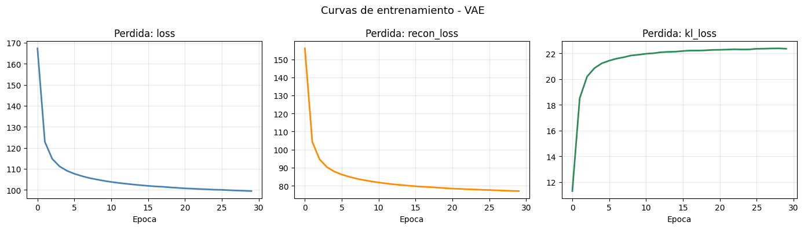
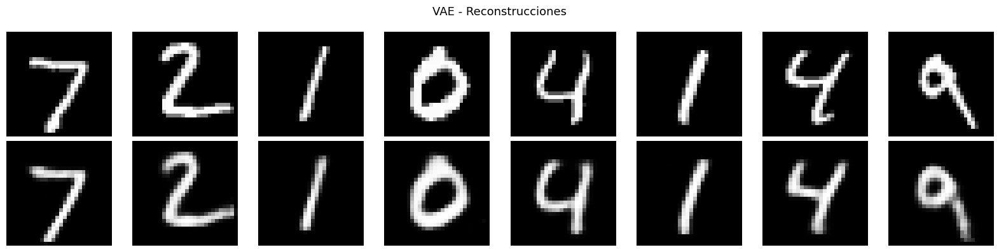
# Generacion de muestras nuevas: muestrear z desde la prior N(0, I)
# Esta es la capacidad GENERATIVA exclusiva del VAE
z_sample = np.random.normal(0, 1, size=(16, VAE_LATENT_DIM)).astype('float32')
generated = vae_decoder.predict(z_sample, verbose=0)
fig, axes = plt.subplots(2, 8, figsize=(16, 4))
for i in range(16):
axes[i // 8, i % 8].imshow(generated[i].squeeze(), cmap='gray')
axes[i // 8, i % 8].axis('off')
plt.suptitle('VAE - Muestras generadas desde z ~ N(0, I)\n(sin usar ninguna imagen real)', fontsize=13)
plt.tight_layout()
plt.show()
WARNING:tensorflow:5 out of the last 97 calls to <function TensorFlowTrainer.make_predict_function.<locals>.one_step_on_data_distributed at 0x7caad587ad40> triggered tf.function retracing. Tracing is expensive and the excessive number of tracings could be due to (1) creating @tf.function repeatedly in a loop, (2) passing tensors with different shapes, (3) passing Python objects instead of tensors. For (1), please define your @tf.function outside of the loop. For (2), @tf.function has reduce_retracing=True option that can avoid unnecessary retracing. For (3), please refer to https://www.tensorflow.org/guide/function#controlling_retracing and https://www.tensorflow.org/api_docs/python/tf/function for more details.
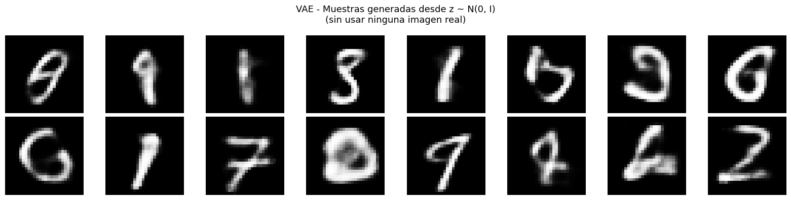
def interpolate_latent(encoder, decoder, x, steps=10, latent_dim=16):
"""
Interpolacion lineal entre dos puntos del espacio latente.
Gracias a la regularizacion KL del VAE, los puntos intermedios producen
imagenes coherentes y la transicion es suave.
"""
mu, _, _ = encoder.predict(x[:2], verbose=0)
z1, z2 = mu[0], mu[1]
alphas = np.linspace(0, 1, steps).astype('float32').reshape(-1, 1)
z_interp = (1 - alphas) * z1 + alphas * z2
recon = decoder.predict(z_interp, verbose=0)
fig, axes = plt.subplots(1, steps, figsize=(2*steps, 2))
for i, ax in enumerate(axes):
ax.imshow(recon[i].squeeze(), cmap='gray')
ax.axis('off')
ax.set_title(f'{alphas[i, 0]:.1f}', fontsize=8)
plt.suptitle('Interpolacion lineal en el espacio latente del VAE', fontsize=12)
plt.tight_layout()
plt.show()
interpolate_latent(vae_encoder, vae_decoder, x_test, steps=10, latent_dim=VAE_LATENT_DIM)
WARNING:tensorflow:6 out of the last 98 calls to <function TensorFlowTrainer.make_predict_function.<locals>.one_step_on_data_distributed at 0x7caad5e7d620> triggered tf.function retracing. Tracing is expensive and the excessive number of tracings could be due to (1) creating @tf.function repeatedly in a loop, (2) passing tensors with different shapes, (3) passing Python objects instead of tensors. For (1), please define your @tf.function outside of the loop. For (2), @tf.function has reduce_retracing=True option that can avoid unnecessary retracing. For (3), please refer to https://www.tensorflow.org/guide/function#controlling_retracing and https://www.tensorflow.org/api_docs/python/tf/function for more details.
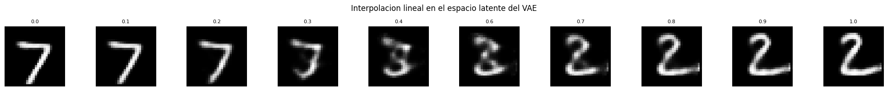
7. Deteccion de anomalias con autoencoders#
Entrenar el autoencoder solo con datos normales (digito 0).
El modelo aprende a reconstruir bien lo normal.
Una anomalia (cualquier otro digito) tendra error de reconstruccion alto.
NORMAL_CLASS = 0
# Filtrar solo la clase normal del set de entrenamiento
x_train_normal = x_train[y_train == NORMAL_CLASS]
print(f'Ejemplos normales (digito {NORMAL_CLASS}) : {len(x_train_normal):,}')
print(f'Total entrenamiento original : {len(x_train):,}')
# Entrenar autoencoder solo con la clase normal
_, _, anomaly_ae = build_basic_autoencoder(latent_dim=16)
anomaly_ae.compile(optimizer='adam', loss='mse')
print(f'\nEntrenando solo con digito {NORMAL_CLASS}...')
anomaly_ae.fit(x_train_normal, x_train_normal,
epochs=20, batch_size=128, verbose=2)
Ejemplos normales (digito 0) : 5,923
Total entrenamiento original : 60,000
Entrenando solo con digito 0...
Epoch 1/20
47/47 - 5s - 108ms/step - loss: 0.0940
Epoch 2/20
47/47 - 0s - 4ms/step - loss: 0.0538
Epoch 3/20
47/47 - 0s - 4ms/step - loss: 0.0396
Epoch 4/20
47/47 - 0s - 4ms/step - loss: 0.0355
Epoch 5/20
47/47 - 0s - 4ms/step - loss: 0.0306
Epoch 6/20
47/47 - 0s - 4ms/step - loss: 0.0274
Epoch 7/20
47/47 - 0s - 4ms/step - loss: 0.0249
Epoch 8/20
47/47 - 0s - 4ms/step - loss: 0.0222
Epoch 9/20
47/47 - 0s - 4ms/step - loss: 0.0195
Epoch 10/20
47/47 - 0s - 4ms/step - loss: 0.0180
Epoch 11/20
47/47 - 0s - 4ms/step - loss: 0.0170
Epoch 12/20
47/47 - 0s - 4ms/step - loss: 0.0162
Epoch 13/20
47/47 - 0s - 4ms/step - loss: 0.0155
Epoch 14/20
47/47 - 0s - 4ms/step - loss: 0.0149
Epoch 15/20
47/47 - 0s - 4ms/step - loss: 0.0145
Epoch 16/20
47/47 - 0s - 4ms/step - loss: 0.0142
Epoch 17/20
47/47 - 0s - 4ms/step - loss: 0.0140
Epoch 18/20
47/47 - 0s - 4ms/step - loss: 0.0137
Epoch 19/20
47/47 - 0s - 4ms/step - loss: 0.0132
Epoch 20/20
47/47 - 0s - 4ms/step - loss: 0.0129
<keras.src.callbacks.history.History at 0x7caad5b538f0>
# Calcular error de reconstruccion en todo el test set
recon_test = anomaly_ae.predict(x_test, verbose=0)
errors = np.mean((x_test - recon_test) ** 2, axis=(1, 2, 3))
normal_errors = errors[y_test == NORMAL_CLASS]
anomaly_errors = errors[y_test != NORMAL_CLASS]
print(f'Error promedio - Normal ({NORMAL_CLASS}) : {normal_errors.mean():.5f}')
print(f'Error promedio - Anomalia : {anomaly_errors.mean():.5f}')
print(f'Razon anomalia/normal : {anomaly_errors.mean()/normal_errors.mean():.1f}x')
Error promedio - Normal (0) : 0.01380
Error promedio - Anomalia : 0.05494
Razon anomalia/normal : 4.0x
# Histograma de errores con umbral
plt.figure(figsize=(10, 5))
plt.hist(normal_errors, bins=80, alpha=0.6, label=f'Normal (digito {NORMAL_CLASS})',
color='steelblue', density=True)
plt.hist(anomaly_errors, bins=80, alpha=0.6, label='Anomalia (otros digitos)',
color='crimson', density=True)
threshold = np.percentile(normal_errors, 95)
plt.axvline(threshold, color='black', linestyle='--', linewidth=1.5,
label=f'Umbral (p95 normal) = {threshold:.4f}')
plt.xlabel('Error de reconstruccion (MSE)')
plt.ylabel('Densidad')
plt.title('Deteccion de anomalias con autoencoder')
plt.legend(); plt.grid(True, alpha=0.3)
plt.tight_layout()
plt.show()
# Metricas con ese umbral
labels_bin = (y_test != NORMAL_CLASS).astype(int)
predictions = (errors > threshold).astype(int)
tp = np.sum((predictions == 1) & (labels_bin == 1))
fp = np.sum((predictions == 1) & (labels_bin == 0))
fn = np.sum((predictions == 0) & (labels_bin == 1))
tn = np.sum((predictions == 0) & (labels_bin == 0))
print(f'Resultados con umbral = {threshold:.4f}')
print(f' Precision : {tp/(tp+fp+1e-8):.3f}')
print(f' Recall : {tp/(tp+fn+1e-8):.3f}')
print(f' Accuracy : {(tp+tn)/len(y_test):.3f}')
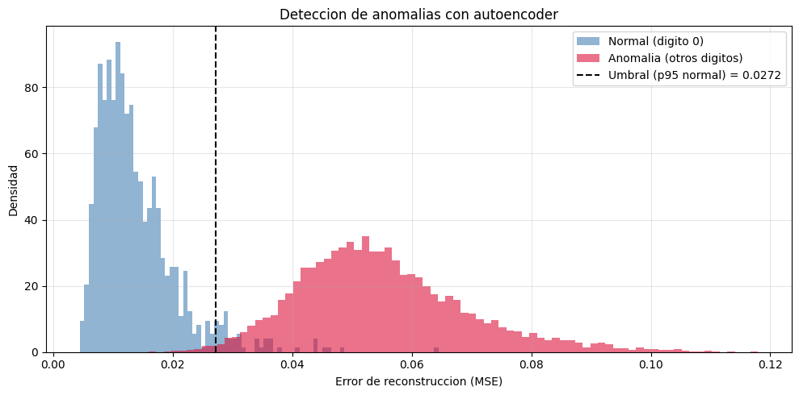
Resultados con umbral = 0.0272
Precision : 0.995
Recall : 0.992
Accuracy : 0.988
8. Comparativa de variantes#
def evaluate_mse(model, x, x_target=None):
"""Calcula el MSE de reconstruccion."""
if x_target is None: x_target = x
recon = model.predict(x, verbose=0)
return np.mean((x_target - recon) ** 2)
results = {
'AE Basico (denso)' : evaluate_mse(ae, x_test),
'AE Convolucional' : evaluate_mse(conv_ae, x_test),
'Denoising AE (noisy in)': evaluate_mse(dae, x_test_noisy, x_test),
'VAE' : evaluate_mse(vae, x_test),
}
print('MSE de reconstruccion en test')
print('-' * 45)
for name, mse in results.items():
print(f'{name:<28} {mse:.6f}')
fig, ax = plt.subplots(figsize=(9, 4))
bars = ax.barh(list(results.keys()), list(results.values()),
color=['steelblue', 'darkorange', 'seagreen', 'mediumpurple'])
ax.bar_label(bars, fmt='%.5f', padding=4, fontsize=10)
ax.set_xlabel('MSE de reconstruccion (menor es mejor)')
ax.set_title('Comparativa de variantes de autoencoder en MNIST')
ax.invert_yaxis(); ax.grid(True, axis='x', alpha=0.3)
plt.tight_layout()
plt.show()
MSE de reconstruccion en test
---------------------------------------------
AE Basico (denso) 0.007200
AE Convolucional 0.003308
Denoising AE (noisy in) 0.006154
VAE 0.012225
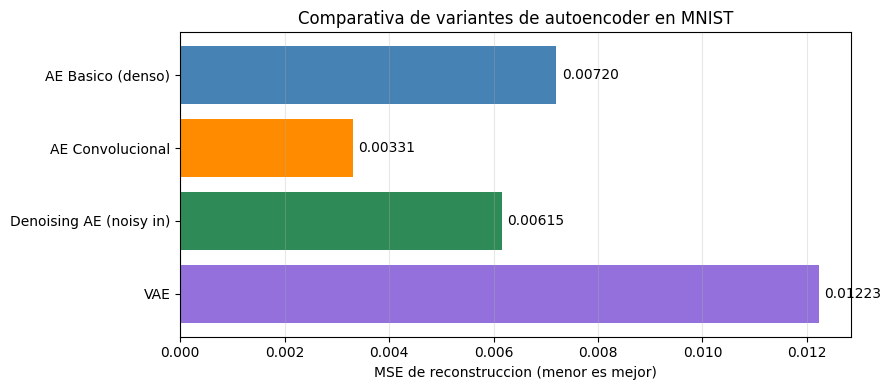
# Tabla resumen
resumen = [
('AE Basico', 'Capas densas', 'No', 'No', 'Reduccion dimensionalidad'),
('AE Convolucional', 'Conv2D + Conv2DTrans.', 'No', 'No', 'Caracteristicas visuales'),
('Denoising AE', 'Cualquiera', 'Si', 'No', 'Restauracion, robustez'),
('VAE', 'Densas + sampling', 'No', 'Si', 'Generacion, interpolacion'),
('beta-VAE', 'Como VAE', 'No', 'Si', 'Disentanglement'),
('Sparse AE', 'Densas + L1 reg.', 'No', 'No', 'Interpretabilidad'),
]
print(f'{"Variante":<20} {"Arquitectura":<28} {"Ruido":<8} {"Generativo":<12} {"Aplicacion principal"}')
print('-' * 100)
for row in resumen:
print(f'{row[0]:<20} {row[1]:<28} {row[2]:<8} {row[3]:<12} {row[4]}')
Variante Arquitectura Ruido Generativo Aplicacion principal
----------------------------------------------------------------------------------------------------
AE Basico Capas densas No No Reduccion dimensionalidad
AE Convolucional Conv2D + Conv2DTrans. No No Caracteristicas visuales
Denoising AE Cualquiera Si No Restauracion, robustez
VAE Densas + sampling No Si Generacion, interpolacion
beta-VAE Como VAE No Si Disentanglement
Sparse AE Densas + L1 reg. No No Interpretabilidad
Conclusiones#
Autoencoder basico: la variante mas simple. Comprime los datos y produce representaciones latentes con estructura semantica visible aunque no use etiquetas.
Autoencoder convolucional: aprovecha la estructura espacial de las imagenes mediante filtros compartidos. Reconstrucciones mas nitidas con menos parametros que la version densa.
Denoising Autoencoder: aprende representaciones robustas al entrenar con entradas corrompidas y objetivos limpios. Captura informacion estructural y no artefactos del ruido.
VAE: la extension generativa. El truco de reparametrizacion y la regularizacion KL producen un espacio latente continuo y estructurado que permite generar muestras nuevas e interpolar entre ejemplos.
La deteccion de anomalias ilustra una aplicacion practica directa: un modelo entrenado solo con datos normales produce errores de reconstruccion mayores ante datos fuera de distribucion.
Referencias#
Hinton, G. E., & Salakhutdinov, R. R. (2006). Reducing the dimensionality of data with neural networks. Science, 313(5786), 504-507.
Vincent, P., et al. (2010). Stacked denoising autoencoders. JMLR, 11, 3371-3408.
Kingma, D. P., & Welling, M. (2013). Auto-encoding variational bayes. arXiv:1312.6114.
Higgins, I., et al. (2017). beta-VAE: Learning basic visual concepts with a constrained variational framework. ICLR 2017.